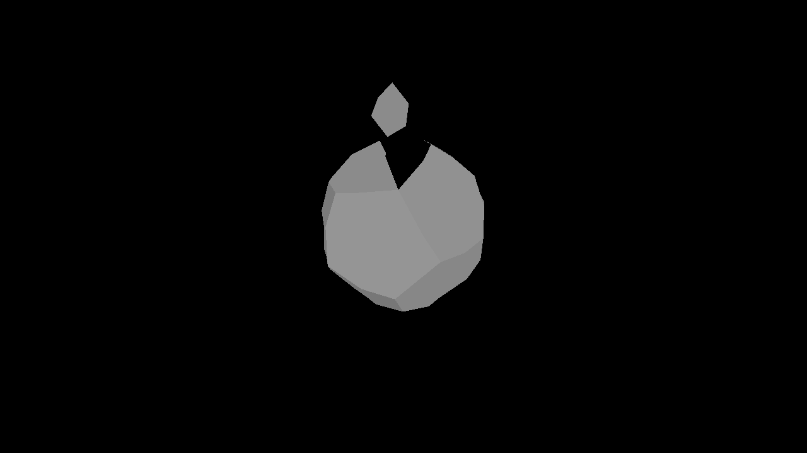

**Assignment 2 Report**
AndrewID: abhinavm
(##) A2L1 CHECKPOINT
IMPLEMENTED
**What edge cases did you handle?**
Boundary edge: If either adjacent face is a boundary face, the flip is rejected (std::nullopt). Flipping a boundary edge would break the mesh topology.
Same face on both sides: If h and t belong to the same face (i.e., the edge is shared by a single face with itself, a degenerate case), the flip is rejected.
Duplicate vertex (C == D): After a flip, the edge would connect vertices C and D. If C and D are already the same vertex, flipping would create a degenerate zero-length edge or a self-loop, so the operation is rejected.
(##) A2L2 CHECKPOINT
IMPLEMENTED
**What edge cases did you handle?**
The main edge case handled ive handled are boundary faces. When splitting an edge, either or both adjacent faces might be boundary faces. For a boundary face, the split still inserts the midpoint vertex and splits the edge itself, but does not add a diagonal edge to subdivide that face, since boundary faces are just placeholder loops representing "empty space" and shouldn't be treated as real geometry. The code handles this with the if (!F_h->boundary) / else and if (!F_t->boundary) / else branches: non-boundary faces get a new diagonal edge and a new face, while boundary faces just get the edge bisected and the halfedge chain updated minimally to stay valid.
(##) A2L3 CHECKPOINT
IMPLEMENTED
Non-manifold (figure-8) topology: Checks that A and B don't share a common neighbor outside of the two adjacent faces. If they do, collapsing would create a non-manifold vertex, so the operation is rejected.
Triangle face collapse: If an adjacent face is a triangle, collapsing would produce a degenerate 2-sided face. Instead, the triangle's two remaining edges are merged or their twins are re-wired together and the face is erased.
Boundary faces: Both checks above correctly skip boundary faces, since they aren't real geometry and shouldn't factor into validity checks or triangle detection.
(##) A2L4 CHECKPOINT
IMPLEMENTED
**What edge cases did you handle?**
For extrude_positions, the key design choice was recovering outer vertex positions from the inner face topology via the chain h->twin->next->twin->vertex, which traverses the surrounding quad to find the corresponding original vertex. Each inner vertex is then placed by lerping between the face centroid and its outer position by (1 - shrink), offset by move.
(##) Note:
I have implemented A2lx1, dissolve vertex.
(##) GenAI Use CHECKPOINT
Which model(s) did you use (e.g., ChatGPT-4, Claude-2, etc.)?
None
For what purpose(s) did you use GenAI (e.g., brainstorming, code generation, debugging, etc.)?
None
What was it good at? What was it bad at?
N/A
(##) A2G1 FINAL
IMPLEMENTED
I implemented Triangulation with a triangle-fan approach: for each non-boundary face with degree > 3, we repeatedly add a diagonal from the first to the third vertex until the face is a triangle. New halfedges, edge, and face are created for each diagonal; the original face is reused for the remaining polygon.
(##) A2G2 FINAL
IMPLEMENTED
Linear subdivision positions: vertices keep their position, edge positions use Edge::center() (midpoint), and non-boundary face positions use Face::center() (centroid). Maps are filled using insert with explicit CRef conversion so the helper’s lookups match.
(##) A2G3 FINAL
IMPLEMENTED
Catmull-Clark: face positions = centroid; interior edge = (f1 + f2 + v1 + v2)/4, boundary edge = midpoint; interior vertex = (Q + 2*R + (n-3)*S)/n with Q = avg face positions, R = avg edge midpoints, S = vertex position; boundary vertex = 3/4*v + 1/8*sum(boundary neighbors).
(##) A2GO1 CHOICE FINAL
IMPLEMENTED
Global Operation Completed: A2Go1 Loop subdivision
Loop subdivision: (1) compute new positions for old vertices (Loop rule with u = (1/n)*(5/8 - (3/8 + 1/4*cos(2pi/n))^2), boundary 3/4*v + 1/8*neighbors); (2) edge positions 3/8*(A+B) + 1/8*(C+D), boundary midpoint; (3) split every original edge and set new vertex position; (4) flip every edge connecting old and new vertex; (5) copy vertex_new_pos to Vertex::position. Connectivity and subdivision logic are in place; exact mesh comparison in tests may differ due to floating-point or choice of weights.
(##) CREATED MODEL FINAL
Image of model in the GUI:

Explanation of what it is and how you made it:
Broken Disco Ball:
started with a dodecohedron and then used the extrude face operation to extrude the face, and used global operations like linear subdivision and loop subdivision to subdivide the mesh.
Any free model sources you need to credit?
(##) GenAI Use FINAL
Which model(s) did you use (e.g., ChatGPT-4, Claude-2, etc.)?
None
For what purpose(s) did you use GenAI (e.g., brainstorming, code generation, debugging, etc.)?
N/A
What was it good at? What was it bad at?
N/A
(##) A2LX1 EXTRA CREDIT
IMPLEMENTED
**What edge cases did you handle?**
Boundary vertex: If any of the faces adjacent to v is a boundary face, the operation is rejected.
Degenerate result: After removing v and all its spokes, the merged face must have at least 3 sides. If the total remaining halfedges would be fewer than 3, the operation is rejected to avoid creating an invalid face.
(##) A2LX2 EXTRA CREDIT
You do not need any screenshots for this task.
**What edge cases did you handle?**
* Answer here:
Your completion will be graded based on the reference `test.a2.lx2.cpp` file and
checking that the operation works in the GUI.
(##) A2LX3 EXTRA CREDIT
You do not need any screenshots for this task.
**What edge cases did you handle?**
* Answer here:
Your completion will be graded based on the reference `test.a2.lx3.cpp` file and
checking that the operation works in the GUI.
(##) A2LX4 EXTRA CREDIT
You do not need any screenshots for this task.
**What edge cases did you handle?**
* Answer here:
Your completion will be graded based on the reference `test.a2.lx4.cpp` file and
checking that the operation works in the GUI.
(##) A2LX5 EXTRA CREDIT
You do not need any screenshots for this task.
**What edge cases did you handle?**
* Answer here:
Your completion will be graded based on the reference `test.a2.lx5.cpp` file and
checking that the operation works in the GUI.
(##) A2LX6 EXTRA CREDIT
You do not need any screenshots for this task.
**What edge cases did you handle?**
* Answer here:
Your completion will be graded based on the reference `test.a2.lx6.cpp` file and
checking that the operation works in the GUI.
(##) A2LX7 EXTRA CREDIT
You do not need any screenshots for this task.
**What edge cases did you handle?**
* Answer here:
Your completion will be graded based on the reference `test.a2.lx7.cpp` file and
checking that the operation works in the GUI.
(##) A2LX8 EXTRA CREDIT
You do not need any screenshots for this task.
**What edge cases did you handle?**
* Answer here:
Your completion will be graded based on the reference `test.a2.lx8.cpp` file and
checking that the operation works in the GUI.
(##) A2GO2 CHOICE EXTRA CREDIT
**Global Operation Completed: **
You do not need any screenshots for this task.
Your completion will be graded based on the reference file for the operation of choice and
checking that the operation works in the GUI.
(##) A2GO3 CHOICE EXTRA CREDIT
**Global Operation Completed: **
You do not need any screenshots for this task.
Your completion will be graded based on the reference file for the operation of choice and
checking that the operation works in the GUI.
(##) Feedback
Use this section to provide feedback about the assignment.